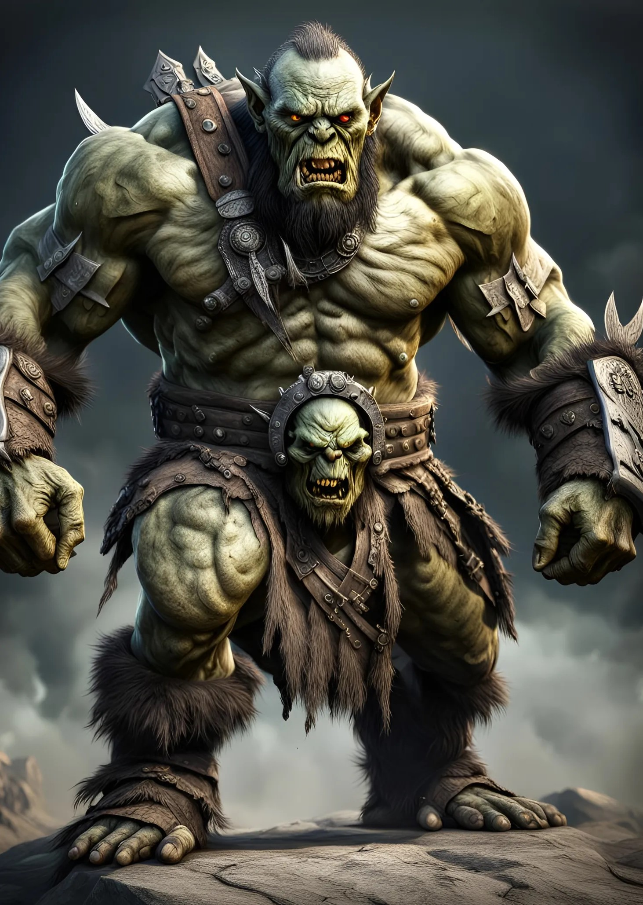

" The Orcs were brought to earth through a dimensional gateway and waged war on humanity. Althoght they tolerate other races, they see humans as “ The pink skin pigs “. Their protective and extremely territorial attitude as well as their pride on their strenght and honor have help them survive in a world of madness full of hostilities. They are characteristic for their strong bond to the clan. You will never see an Orc alone. "
